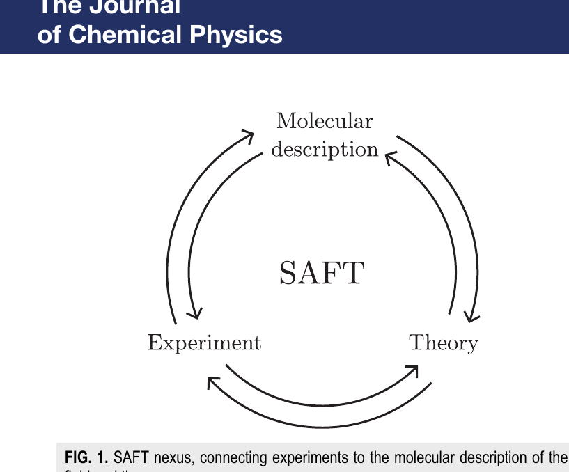
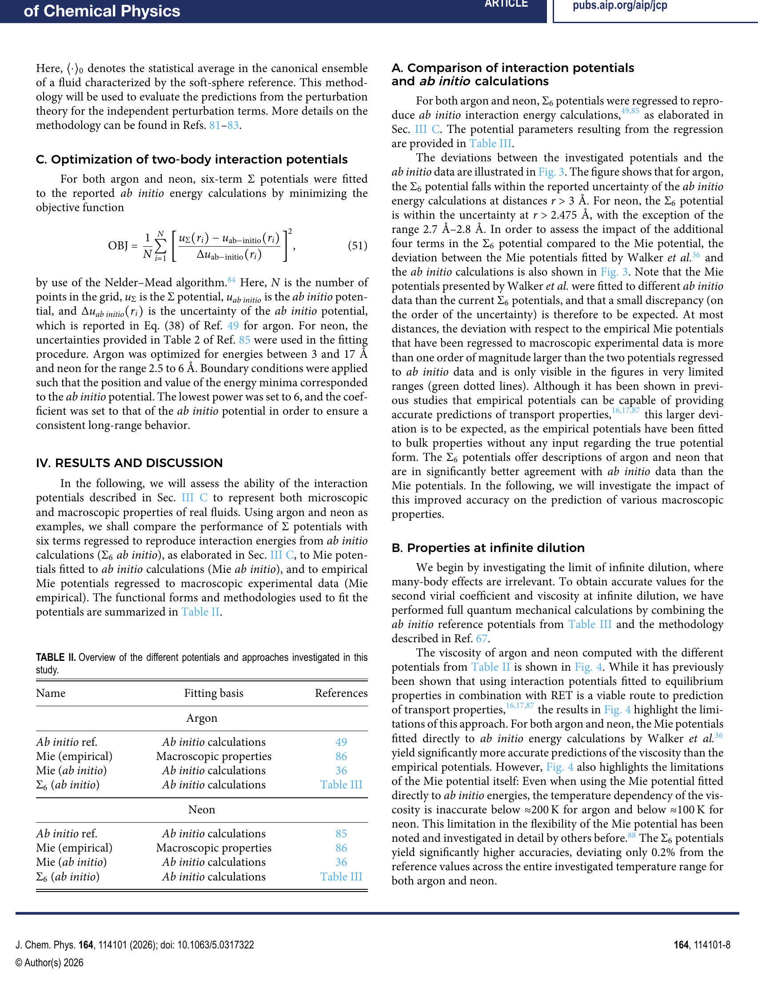
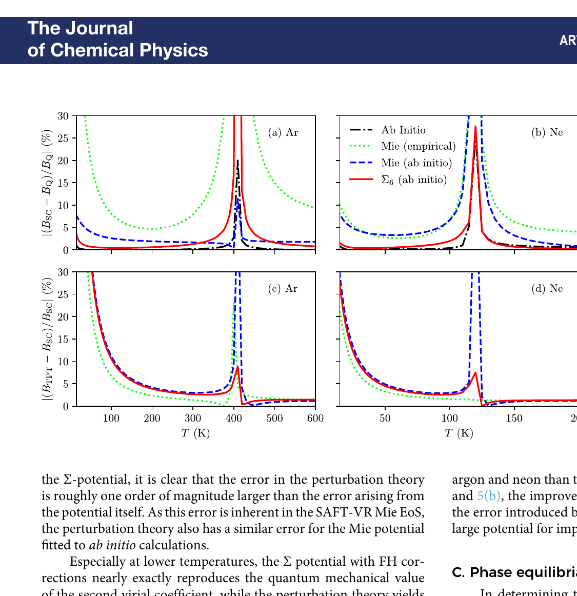
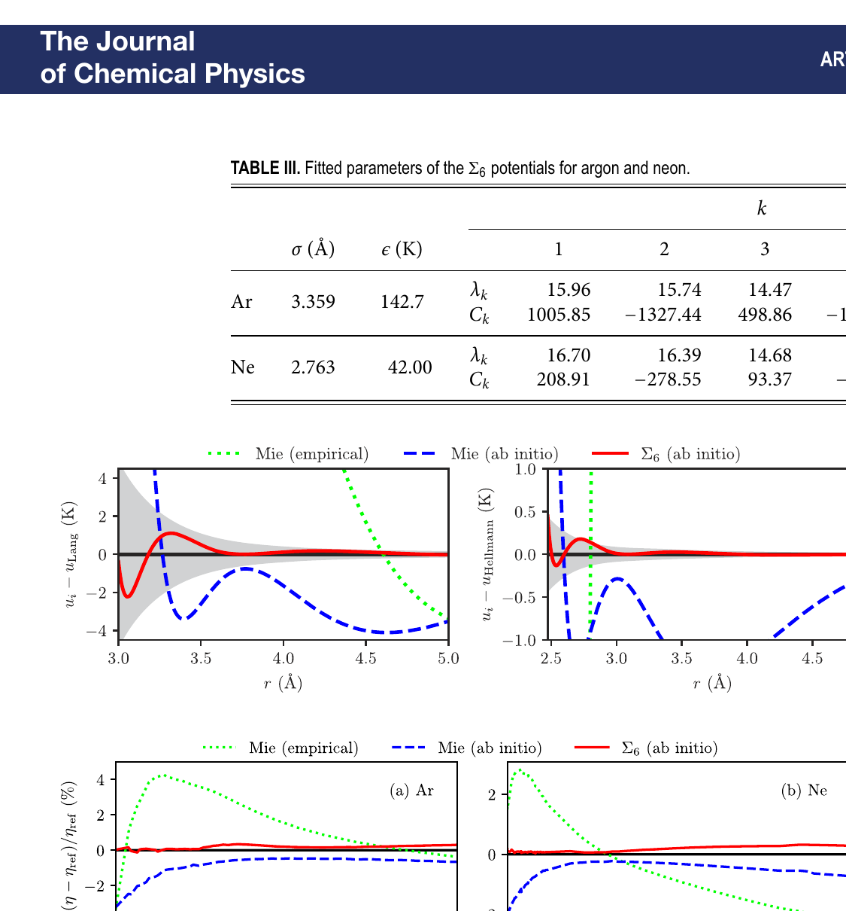

Mie 势能描述分子间相互作用已经很成功了，但它有个隐藏的天花板——能不能突破？
SAFT（统计缔合流体理论）是当下最成功的分子热力学框架之一。它的核心逻辑是：从分子间的相互作用势出发，通过微扰理论推导出状态方程，进而预测宏观热力学性质。PC-SAFT 和 SAFT-VR Mie 是两个最常用的版本。
目前主流的 SAFT 变体用 Mie 势（广义 Lennard-Jones）来描述分子间作用力。Mie 势只有两个形状参数（排斥指数和吸引指数），调整方式有限。这在绝大多数场景下够用了。但有两个地方碰到了墙：
这篇论文的动机就是：用一组 Sutherland 势的求和来替代单一的 Mie 势，获得足够的灵活性来精确表示 ab initio 势能曲线，同时测试微扰理论本身的极限在哪里。
Mie 势长这样：u(r) = C · ε [(σ/r)n − (σ/r)m]，一个排斥项减一个吸引项。形状被 n 和 m 两个指数完全决定。
Sutherland 势更简单——只有一项：uk(r) = Ck · ε · (σ/r)λk。
关键思路：把多个 Sutherland 势加在一起（一个求和），每项有不同的指数 λk 和系数 Ck。系数可以随温度和密度变化。这就是 Σ 势：

为什么 Sutherland 求和行得通？因为 Mie 势本身就可以展开为两个 Sutherland 势的差。偶极-偶极相互作用是 (σ/r)6，三体效应可以近似为密度依赖的 Sutherland 项，Feynman-Hibbs 量子修正也是 Sutherland 势形式。所以 Σ 势不是生硬的数学凑合，它的每一项都对应一种真实的物理效应。
对于氩和氖，作者用 6 项 Sutherland 势（Σ6）拟合了 ab initio 计算的势能曲线。拟合方法是 Nelder-Mead 最小化加权残差。

纯用分子信息（没有任何宏观实验数据的拟合），SAFT-VR Sum 预测氩和氖的热力学性质：
| 性质 | Σ6 势偏差 | Mie 势偏差 | 说明 |
|---|---|---|---|
| 无穷稀释粘度 | 0.2% | 1–4% | 温度依赖性也更准 |
| 第二维里系数 | ~1% (15K 以上) | 2–3.3% | Σ 势直接积分 vs 微扰理论 |
| 共存密度 | ~0.2% | 可比 | 需加三体+量子修正 |
| 饱和压力 | <1% | 可比 | 氩的 FH 修正影响小 |
| 等容/等压热容 | >10% | >10% | 微扰理论本身的限制，与势无关 |
关键发现：等容热容和等压热容的预测偏差很大（超过 10%），但这个误差不是 Σ 势的问题——换成 Mie 势也一样差。这说明瓶颈出在微扰理论本身（特别是二阶微扰项的 α-假设），不在分子势的表示精度。
论文还做了一个思想实验。设计了一个叫 "Funky" 的势能——有两个极小值（普通 Mie 势只有一个）。Mie 势无法表示这种形状，但 Σ 势可以。

结果：Mie 和 Funky 流体有相同的 α 参数，但相包络线形状不同。微扰理论的 α-假设预测它们行为相似，GEMC 模拟证明不是。这直接证伪了 α-假设在双极小值势上的适用性。
用多个幂函数的加权求和来表示分子间作用力，每项对应一种物理效应（排斥、色散、偶极、三体、量子修正）。
Mie 势像用一个正弦波拟合声音信号——只有频率和振幅可调。Σ 势像傅里叶级数——多个"泛音"叠加，项数越多越能逼近任意信号。而且每个"泛音"有物理意义，不是纯数学凑合。
SAFT 的预测精度上限取决于分子势的表示精度。Mie 势能表示的形状有限，Σ 势打破了这个天花板。论文证明用 6 项 Σ 势就能把 ab initio 势能曲线拟合到量化计算的不确定性以内。
一个在 SAFT 微扰理论发展中广泛使用的假设：具有相同无量纲 van der Waals 能（即相同的 α 参数）的分子，二阶和三阶微扰项也相似，因此有相似的相行为。
假设"体重相同的人体型也相似"。对大多数人大致成立，但健美运动员和普通人可以体重一样、体型完全不同。Mie 势只有一种"体型"（一个极小值），所以 α-假设通常成立。但 Funky 势有两种"体型"（两个极小值），α-假设就失效了。
这是微扰理论的核心简化假设。论文通过 Funky 势的反例证明它在更广泛的势能空间中不成立——二阶微扰项 a2 的误差比 Mie 势大一个数量级。这意味着改进 SAFT 的下一步不是换更好的势（Σ 势已经足够好），而是改进微扰理论本身。
这个发现对 SAFT 的未来发展方向有指导意义。过去十几年，很多工作集中在"找更好的分子势"——从 square-well 到 Mie，从两参数到多参数。这篇论文说：势的表示精度已经够了（Σ 势），但微扰理论本身的近似才是精度天花板。特别是 a2（能量涨落项），论文证明它对势能的具体形状敏感，不能靠 α 参数简单归类。
对实际应用的影响：如果只是预测 VLE 和密度，现有的 SAFT-VR Mie 已经很好。但如果想预测粘度和第二维里系数到 ab initio 精度，就需要 Σ 势。如果想预测等容热容和等压热容，换势没用——需要改微扰理论。
选题非常扎实。从 ab initio 到状态方程的 pipeline 是 SAFT 领域最有前景的方向之一。这个团队（NTNU 的 Wilhelmsen 组）在这条路上已经做了好几篇系统性的工作（Jervell & Wilhelmsen 2023, 2024），这篇是自然的延伸。
方法干净。Σ 势的定义简洁，和现有 SAFT 框架的对接也顺畅——因为微扰理论的积分对 Sutherland 势有解析结果，多项求和就是线性叠加。不需要推倒重来，只需要把现有 SAFT-VR Mie 的代码里把势能部分换掉。Funky 势的设计很聪明——刻意构造一个 Mie 势无法表示的形状，用来探测理论的极限。

实验设计有层次。四个层面的验证：势能拟合质量（Fig 3）→ 无穷稀释性质（粘度 Fig 4、第二维里系数 Fig 5）→ 相平衡（VLE Fig 6）→ 超临界性质（Fig 9）。每一层都拆解了误差来源：势的表示误差 vs 微扰理论的误差 vs 量子修正的误差。Monte Carlo 模拟作为"真值"参考也做了（GEMC for VLE, NPT for supercritical）。
短板。第一，只做了氩和氖两种单原子分子。这是最简单的情况——球对称、无极性、无内部自由度。推广到多原子分子（链节模型、极性项）需要额外的工作，论文没有讨论这条路多难。第二，等容热容和等压热容的预测偏差超过 10%，论文归因于微扰理论但没有提出改进方案——只是说"改进微扰理论是未来方向"。第三，Funky 势的分析虽然有趣，但 Funky 势不对应任何真实分子。它更多是一个理论工具（用来证伪 α-假设），不是实用贡献。第四，论文没有和 PC-SAFT 做对比——只在 SAFT-VR 框架内讨论，不清楚 Σ 势在 PC-SAFT 框架下的表现。
写作清晰严谨。Theory section 的推导完整但不冗余，公式编号合理，符号一致。图表质量好，Fig 3-5 的误差分解特别有信息量。唯一的抱怨是 Methods section 里 Monte Carlo 模拟的参数设置很长，可以放 supplementary。
迁移：Σ 势的思路——"用多项简单函数的叠加替代单一复杂函数"——和 GPUTherm 的算子分解是同一个哲学。在 GPU 上实现 Σ 势可能比 Mie 势更友好：Sutherland 势的每一项都是简单的幂函数运算，k 项求和可以用 loop unrolling 或 SIMD 并行。如果 GPUTherm 未来要支持 SAFT-VR Sum，算子层面只需要新增一个"Sutherland sum evaluator"，不需要改融合策略。
混搭：论文揭示的"微扰理论二阶项是精度瓶颈"和 GPUTherm 的 GPU 加速方向可以产生有趣的互补。如果能在 GPU 上快速做 Monte Carlo 采样（利用 SimpleNonlinearSolve.jl 那篇提到的小系统 GPU kernel 技术），就可以直接用模拟替代微扰理论的二阶项——用计算量换精度。这在 CPU 上不划算，但在 GPU 上每秒能做几千万次 NPT 评估时，可能变得可行。